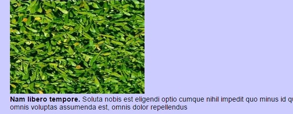

Galeria

<section></section> pomiędzy nim zawieramy główną zawartość strony <article></article> tworzymy nim zestaw elementów tworzący spójny artykuł <aside></aside> uzupełnienie naszej strony <nav></nav> menu nawigacyjne na stronie <figure></figure> rama galerii zdjęć <figcaption></figcaption> podpisy pod zdjęciem